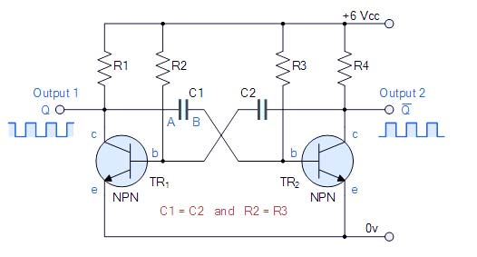
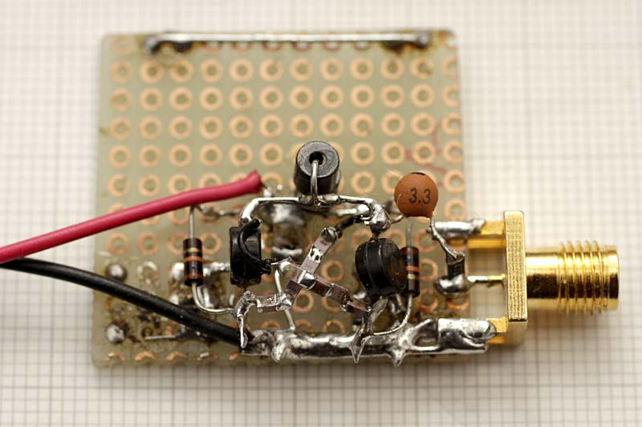
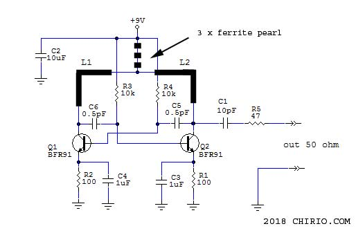
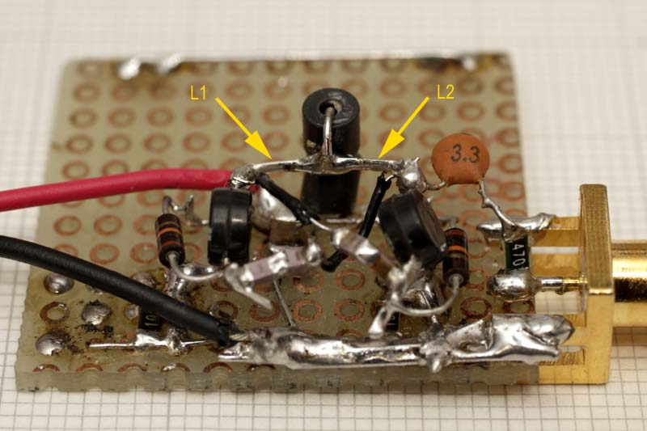
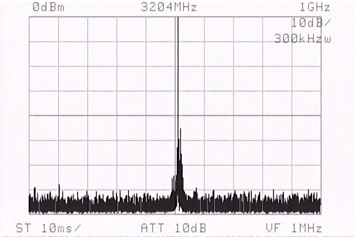
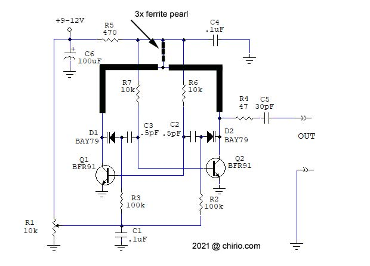
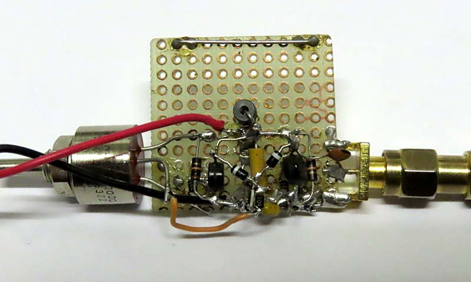

Radio & antennas
Simple RF generator 2400/2700 MHz with BFR91A
variable with Varicap
Page index
Premise
January 2018 - January 2021

This is the circuit of an astable multivibrator, used to generate symmetric square waves when the mirror components have the same value. It is generally only used as a didactic configuration and/or to generate square waves at low frequency, this circuit is rarely seen for generating frequencies greater than a few MHz.
Trying to make an RF generator with this circuit I obtained excellent results in VHF band, therefore I tried to go up in frequency using transistors BFR91A already used in other projects, well the operation up to over 3600 MHz is possible, everything works well also just assembling in air the few components.
For those who want to try to go beyond 3 GHz I recommend using the BFP420 transistor with ft of 10 GHz.

This is the experimental circuit assembly on a board; note the 4 x 1pF capacitors in series for each branch. This is the configuration that works at 3200 MHz. Pay careful attention to the connections; the terminals must be as short as possible. If available, use only SMD components.
Circuit diagram fixed frequency

- The generator circuit is very simple, it is a symmetrical astable oscillator, the peculiarity is that it is made to work in RF, Similar to the one in VHF using 2N2222A
- We can take the output signal from both sides on the collector of Q1 and Q2, between them it will be phase-shifted by 180°. Do not load the output too much as it unbalances the oscillation. It is not easy to make at these frequencies a secondary that takes signal from both windings that could give greater output signal and better coupling.
- The capacitors C5 and C6 feed the inverted signal to the opposite transistor, thus starting continuous oscillation.
- By changing the value of the capacitors it is possible to have a wide variation of the output frequency.
C5=C6 = 1pF f=1400 MHz
C5=C6 = 0.5pF f=2400 MHz
C5=C6 = 0.33pF f=2800 MHz
C5=C6 = 0.25pF f=3100 MHz
- Using a more compact assembly it is conceivable to go even higher in frequency, but I don't have capacitors smaller than 0.25pF, and 0.25pF is already implemented with 4 x 1pF SMD 603 in series.
- Resistors R3 and R4 determine the transistor bias and also contribute to the frequency value, to reach the upper frequency limit we must use the lowest possible value, with 10K we have the best operation, bringing it to 8.2K there are no increases in output signal, only the current in the transistor increases.
- The R1 and R2 resistors limit the current of Q1 and Q2 to a maximum of 40 mA with 9 V supply, during tests I advise not to exceed 9 V otherwise you risk burning the transistor.
- For choke inductor, 2 or 3 ferrite beads threaded on a 0.7mm terminal are used, resistor lead clippings work fine. All of it soldered as close as possible to the C2 ceramic bypass capacitor.
- Coils L1 and L2 are realized directly from the collector terminal of the BFR91A, the length will determine the best efficiency for the frequency in use, try even just 5mm from the transistor to the common point for frequencies above 3 GHz. We are talking about values of 2-4 nH, difficult to measure, perhaps easier to calculate with mathematical formulas.

- All of this must be inserted into a metal container to avoid direct radiation, which can disturb transmissions like WiFi and others in this frequency range.
- With 9V battery the output signal always has an interesting value between 10dBm at 1400 MHz up to 0dBm at 3200 MHz.
Output signal

This is the output signal on 50 ohm load, we are at 3200 MHz with 0dBm
Circuit diagram variable frequency

This is the revised schematic with the possibility of continuously varying the oscillation frequency of the microwave generator, you must insert two Varicap diodes in series with the return capacitors of the astable, the variation of the capacitance of the diodes allows you to vary the oscillation frequency, the tuning range depends on the characteristics of the Varicaps themselves, they should be with variation from 0.5 - 3pF not easy to find, for the test I used Varicap diodes obtained from a UHF tuner, I have seen that you can find them in catalogs with even lower values and with a wider range, but the size is a 603 SMD not easy to handle, also for this schematic the black bands represent inductors L1 and L2, made only of the transistor leads about 5-7mm per side, it is good that they are perfectly symmetrical at the central supply point. The SMD capacitor C4 should be soldered near the intersection point.

You can see the two black Varicap diodes with white stripe, recovered from a UHF Tuner, I recommend using diodes with a larger capacitance range, like a variation from 0.5 to 5pF. To exploit the full range of the Varicap I recommend consulting the relative datasheet, usually the maximum range is obtained with 28V. On the left the potentiometer that performs frequency adjustment by varying the voltage applied to the two Varicap diodes. With these Varicap diodes and 9V, the frequency variation goes from 2400 to 2700 MHz.
...
Applications
Given the wide spectrum of frequencies that can be generated, the applications are many:
- Microwave experiments
- Antenna tests
- Checks on components like filters or amplifiers
- By modulating the Varicap adjustment with a sawtooth voltage waveform, a sweep generator can be obtained
Not always a signal higher than 0dBm is needed, therefore always staying inside a metal container the signal can be greatly attenuated with SMD resistive divider.
© Roberto Chirio: all rights reserved.